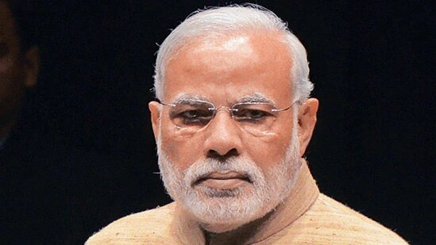
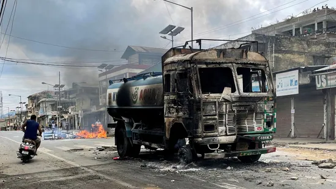

1. Is India odd man out in China-dominated SCO and BRICS?
Despite most SCO and BRICS members being recipients of Chinese BRI investment, India is ready to stand out and converge with fellow members for the global good.

Prime Minister Narendra Modi.
With the rise of China as a global economic and military super-power inevitable this decade, India will be the odd man out in the SCO and the BRICS as virtually all the members of these groupings are recipients of copious infrastructure aid from Beijing in the name of Belt-Road Initiative (BRI). Brazil is still to join the BRI but has already received some USD 66 billion in infrastructure investment from China with its Leftist President Luiz Inacio Lula da Silva cozying up to President Xi Jinping in Beijing last month.
It is quite evident that China with its economic and political heft will out-gun every member of these two groupings with the strong exception of India and try to impose its own vision of global order on the multilateral groupings. The SCO summit is being hosted by India and the BRICS summit by Brazil in 2023.
2. Manipur violence: Train services stopped; BJP MLA attacked in Imphal. 10 points
The army said the situation in violence-hit Manipur has been brought under control through coordinated actions by all stakeholders.
The Indian Army on Friday said the situation in violence-hit Manipur has been brought under control through coordinated actions by all stakeholders.

1. The Indian Army said the Indian Air Force undertook continuous sorties from two airfields in Assam employing C17 Globemaster and AN 32 aircraft. “Induction commenced on the night of 4th May and additional columns commenced domination with effect from wee hours of May 5,” the army said.
2. Domination and evacuation of civilians of all communities from affected areas continued throughout the night. Flag march in Churachandpur and other sensitive areas underway, the army said.
3. 'Virat Kohli won't do it...': Harbhajan calls Shastri's 'filler for Rohit captaincy' fix 'huge step back'
Harbhajan Singh has discarded Ravi Shastri's theory that Virat Kohli should captain India when Rohit Sharma is unavailable.

Yuvraj Singh has called out Virat Kohli and Gautam Gambhir by dropping a fiery message after the duo's ugly altercation in IPL 2023.(ANI-PTI)
Days after Virat Kohli and Gautam Gambhir reignited their age-old rivalry with the infamous on-field altercation in the Indian Premier League (IPL) 2023, legendary all-rounder Yuvraj Singh has issued an eye-catching message for the 2011 World Cup winners. Former Indian skipper Kohli and Lucknow Super Giants (LSG) mentor Gambhir traded personal insults after Faf du Plessis' Royal Challengers Bangalore (RCB) defeated KL Rahul's men in match No.42 of the IPL 2023 at the Bharat Ratna Shri Atal Bihari Vajpayee Ekana Cricket Stadium on Monday.